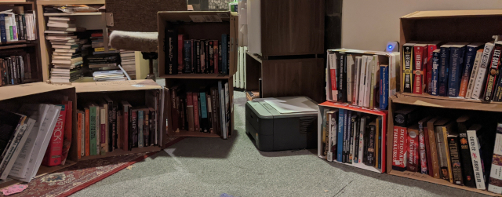
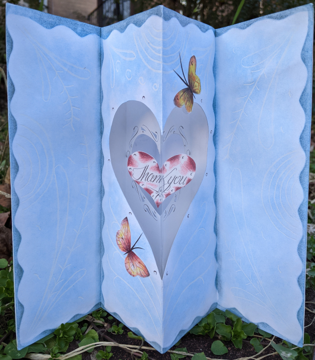

Howdy!
I am once again writing, as I've done many times over the years, to request books. But first: thank you! Thank you for the countless joy-filled hours extending into days, weeks, and months... When my eyes scan the sentences printed upon the page... my thoughts race over hills, valleys and mountains, through cities, countries and worlds heretofore unknown in endless adventures, inhabiting the hearts and minds of myriad characters planted in the fertile fields of my imagination where I am truly free. Free as I ever was or will be, as free as you to go anywhere or do anything. Free to follow along in others' footsteps from Lucy on that African plain with the first known of our ancestors' footfalls to humanity's collective one giant leap to the moon with Neil Armstrong. Free to dream the beginning footsteps of my own future. Free in mind and memory to meet others who also once dared to dream, to go where everyone and no one has gone before. Free to believe in today becoming a better tomorrow with the cover of every book I open, opening those dreamland doors and setting my feet inside... the outside, the other side, that resides inside us all.
But ultimately, it is because of you, who put the books in my hands, that I am set free to so dream.
Thank you!
For 15 years, we operated out of a room in the basement of Foundry United Methodist Church, often having as many as 30 volunteers in the room in one evening. That came to an end in March, when Foundry closed its building in response to the pandemic. Foundry will reopen after the District of Columbia enters Phase Three of its coronavirus recovery, and we anticipate returning to Foundry at that time, but that may not happen until well into 2021.
In order to continue providing service to prisoners while also ensuring the safety of our volunteers, during the summer we distributed our books and other supplies among makeshift sites that each are used by only 1-2 volunteers. Thrifty volunteers found creative solutions to the problem of our bookshelves still being in Foundry's basement, repurposing old TV stands and tables. One volunteer constructed these shelves out of cardboard boxes.

We continue to engage in a multi-step process to ensure that each book package will comply with the rules of the prison it is being sent to. Books are selected by one volunteer then handed off to a second volunteer for quality control and packing. This usually entails meeting outside, and has made us avid followers of weather forecasts.
Other volunteers receive book donations from the public, sort them by genre, and drive them to the sites where they are needed. On one memorable occasion, heavy rain came down while volunteers raced to transfer heavy boxes of books between cars.
Obtaining enough of the right kinds of books has been more challenging during the pandemic, and we are grateful to donors who have purchased books from our Amazon and Politics and Prose wish lists or donated funds for purchasing books.
We are driven by the awareness that prisoners' need for books has never been greater. Many of the prisoners requesting books from us during the pandemic have commented on the extreme isolation they are experiencing during the pandemic, saying that they have gone nine months without access to libraries, classes, or religious services. Books are now one of their few sources of entertainment or spiritual sustenance.
Despite all of the challenges of sending books to prisoners without access to our room in Foundry's basement, we are now sending books at around the same rate we did before the pandemic. Thank you to everyone who has made this possible.
Prisoners often thank us for the books they receive from us by sending us homemade cards. Making these cards is one of the few outlets prisoners have for creativity, and in some cases the cards are very elaborate. One prisoner sent us this extraordinary card:

Sadly, although prisoners can make and send cards like this, in many cases they cannot receive cards from people on the outside. Rules have been introduced in many prisons prohibiting all cards except for those shipped directly from a handful of private companies.
Our work during this especially challenging year has been possible only because of the support we've received from all of you who have donated books, money, packing supplies, and time. The value of your contributions is expressed well by this letter we received from C. in North Carolina:
"Greetings and blessings... I thank you for making free literature available to prisoners like me who don't have the resources to buy a book... Friends, today more than ever in these days of crisis and with the viral pandemic striking the nation, a book helps us keep terror of this mortal virus out of our heads. Also, a book is a perfect companion in a lonely cell... I have learned that a book is a good friend that teaches, advises, and guides you... Some people think that [a book] serves only to kill time, but they aren't using their imagination to understand what the book is trying to communicate. Others like the world of literature and we embark on this great adventure with the help of you who make it possible for us to have a book in our hands. Good friends, many thanks!"
Please consider making a donation to fund our important work.
We welcome both checks and online donations. If donating through Flipcause, you can opt to make your donation a recurring gift.
Checks should be made payable to "DC Books to Prisons" and sent to us at:
DC Books to Prisons - Donations
PO Box 34190
Washington, DC 20043
If you prefer to donate books, you can order them from our Politics and Prose wish list or Amazon wish list. If you are in Washington DC and wish to donate used books, please see our list of needed genres then follow the instructions at the bottom of the page to arrange a drop-off at one of our temporary workspaces.
Another option for donating books to prisoners is to send books directly to a prison librarian. For a list of prison librarians accepting books, contact btopdc@gmail.com with "Prison Library List" in the subject line.
Some of you used to support our work by volunteering with us in Foundry's basement or bringing books to us there. We look forward to seeing you all again once it's safe.